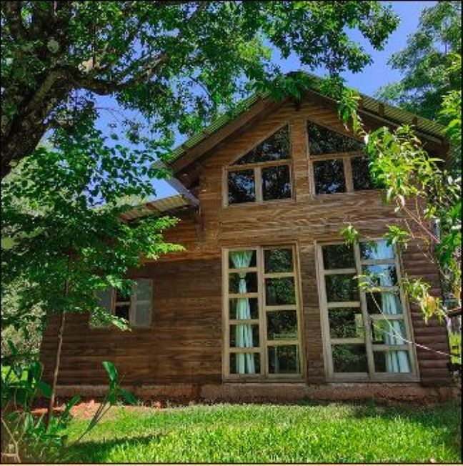

Somos Ana y Mauro, nos conocimos en Buenos Aires hace 8 a√±os. Fuimos mochileros por Latinoam√©rica, voluntarios de ONGs, docentes y hoy mapadres de Milo. Vivimos en una chacra en Misiones y desde ac√° queremos compartirles el proceso de creaci√≥n de las artesan√≠as que estuvimos y estamos preparando para este sue√±o que se llama CERNE. Hace 4 a√±os decidimos buscar un lugar fijo para tender ra√≠ces por un tiempo y criar a nuestro Milo üß° y nos mudamos a Misiones, en una chacra cerca de Leandro N. Alem.
Aquí construímos, y seguimos construyendo, nuestra casita en el monte con nuestras propias manos. Aprendimos a vivir rodeados de naturaleza, un lugar de encuentro para amigos/as que nos visitan y recargan energía. Despues de dejar avanzada la casa, comenzamos a armar un taller para guardar las herramientas y trabajar allí los días de lluvia. Poco a poco se fue convirtiendo en el taller de CERNE y el lugar donde pasamos varias horas del día. La madera que usamos para crearla es de #Incienso y #Guatambú. ♻️ Recordá que utilizamos retazos de madera reciclada que ha nacido en el monte misionero rodeado de un ecosistema al que queremos cuidar y preservar, por esto, aprovechamos al máximo cada trozo de tabla y que nuestro trabajo es 100% artesanal.